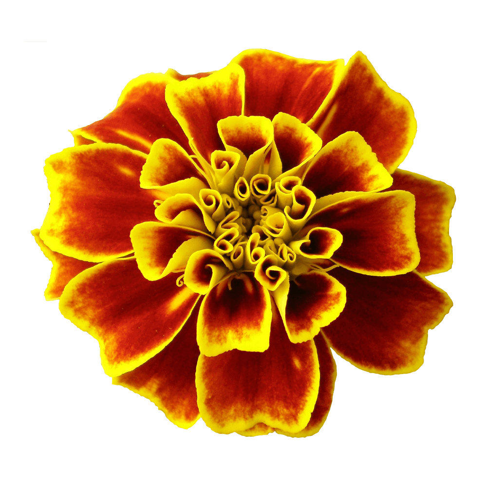

Simple in its structure; sharp and generous counter-shapes which create a medium texture that calls for good page colour, in addition to offering a more relaxed reading experience for each line of text: Mate.
The italics that accompany the regular style show their quality in the shading of strokes, in the counters and the unusual shapes for this style as well as the calligraphic reminiscences that give this style a different and pleasant visual rhythm.
The primary use for the family is in text, yet due to the constructive details of letterforms, this family can be used in larger sizes for display typography.
Font available from Google Fonts.
Marigolds are available in shades of orange and yellow; some with highlights of red, gold, copper or brass. Calendula, also called Pot Marigold, is not related to the common yellow and orange Marigolds that most people know, but is an herb often grown for medicinal purposes.
Marigolds bring the colour of sunshine to your garden, as well as butterflies, bees and ladybugs.
The Marigold is also called the “herb of the sun”, representing passion and even creativity. It is also said that Marigolds symbolise cruelty, grief and jealousy. It can mean to show strong passion, being associated with the legendary brave and courageous lion.